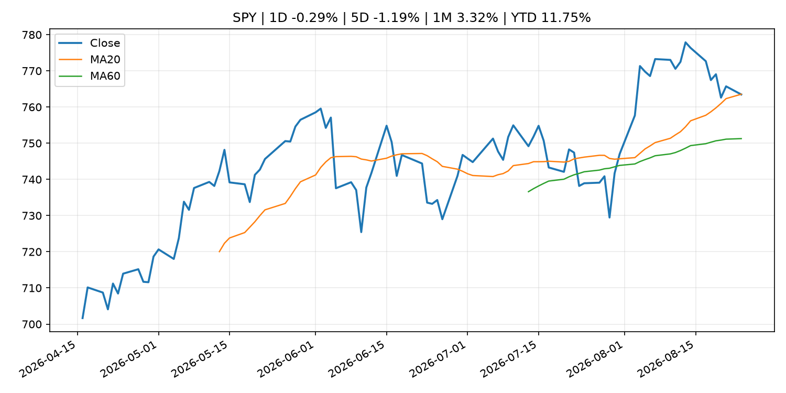
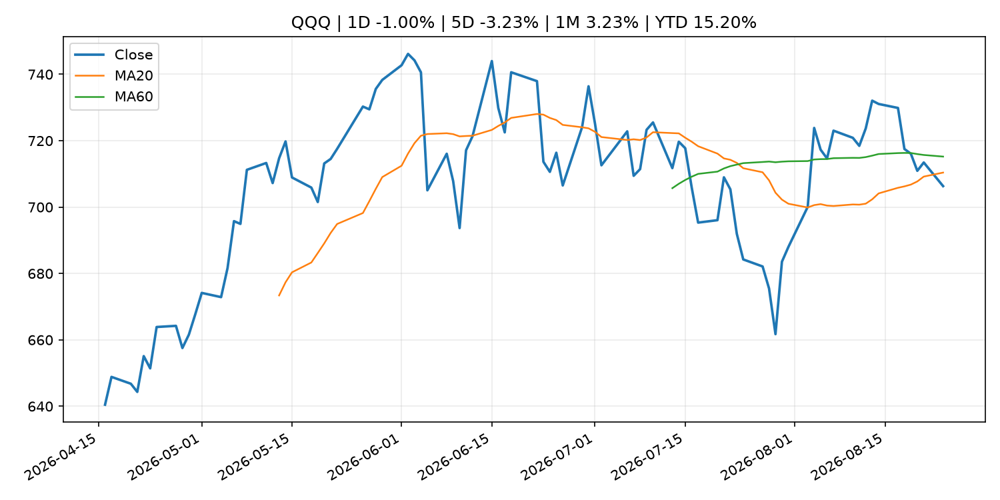
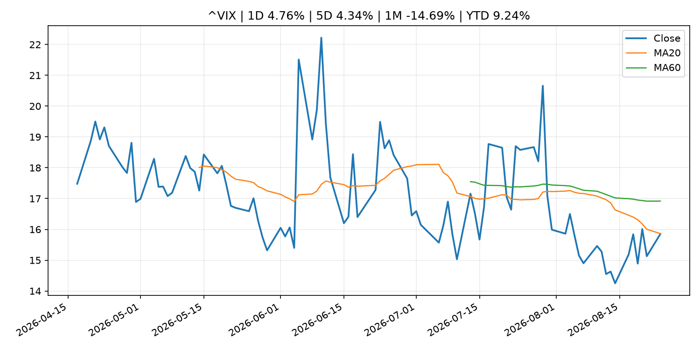
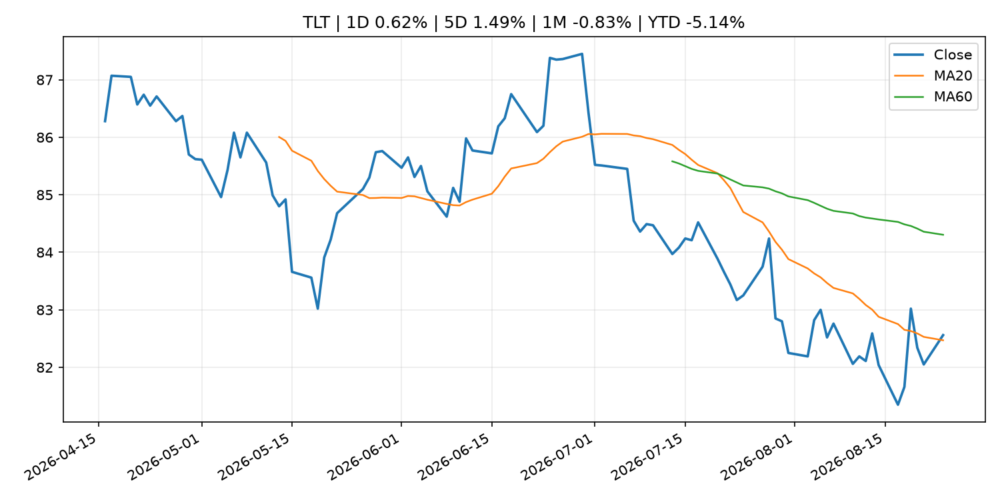
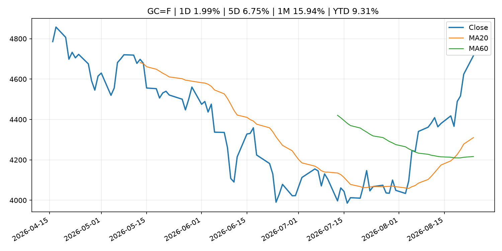
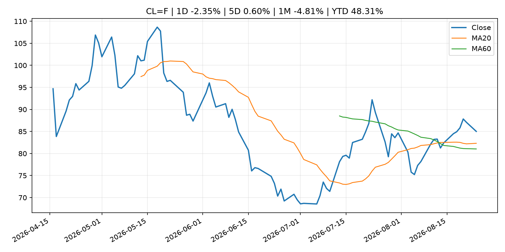
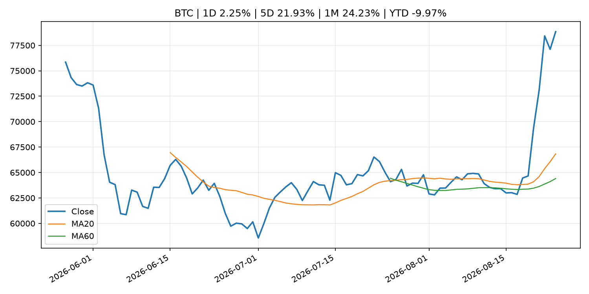
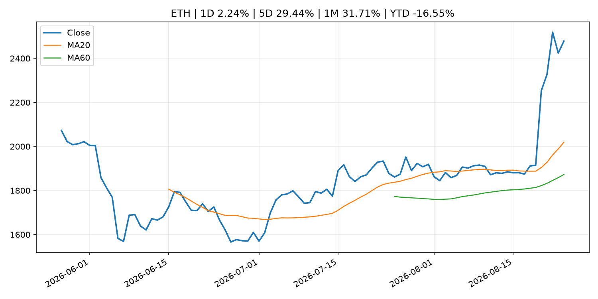
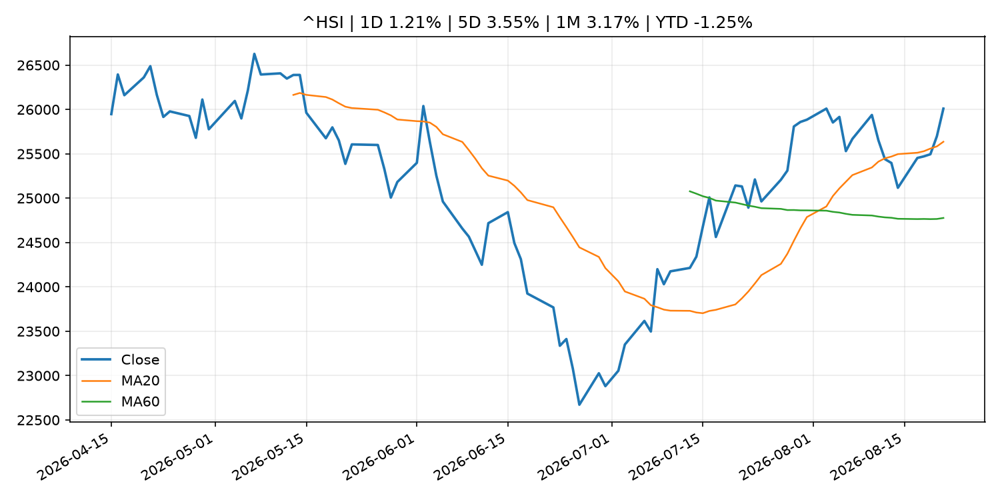

Global Macro Morning Briefing - 2026-08-25
Not financial advice / 非投资建议。
0. 今日总览
- 市场状态：unknown。市场信号不足，暂不判断明确状态。
- 今日三大主线：
- geopolitical_risk: Trump’s trade war with Canada could lead the U.S. back to quantitative easing
- macro_data: Jackson Hole Symposium, U.S. PCE prices, IREN earnings: Crypto Week Ahead
- fiscal_policy: Bessent’s sweeping sanctions against Iran send oil prices to their biggest drop in 3 weeks, while fueling hopes of de-escalation
- 一句话结论：今日晨报重点关注：地缘风险可能推升避险需求、能源价格和市场波动率。；这类宏观数据会直接改变市场对通胀、增长和政策路径的预期。。跨资产方面，SPY 1D -0.29%；QQQ 1D -1.00%；^VIX 1D 4.76%；TLT 1D 0.62%；GC=F 1D 1.99%；CL=F 1D -2.35%；BTC 1D 2.25%；ETH 1D 2.24%；市场信号不足，暂不判断明确状态。政策、通胀、利率、美元、美债、能源和加密监管仍是主要观察线索。所有结论仅基于公开数据与短摘要整理，不构成投资建议。
1. 隔夜跨资产市场
- 美股：SPY 1D -0.29%，QQQ 1D -1.00%，整体趋势需结合 VIX 和利率确认。
- 美债/美元：TLT 1D 0.62%，美元指数 1D 0.19%，是判断折现率压力的核心线索。
- 黄金/原油：黄金 1D 1.99%，原油 1D -2.35%，用于观察避险、通胀和地缘风险。
- 加密：BTC 1D 2.25%，ETH 1D 2.24%，关注是否独立于纳指走出加密自身行情。
- 港股/A股：恒生 1D 1.21%，沪深300/上证 1D n/a，重点看中国政策预期与人民币线索。
- 风险观察：关注后续数据是否确认当前跨资产信号。
US_EQUITY
| symbol | latest close | 1D | 5D | 1M | YTD | trend |
|---|---|---|---|---|---|---|
| SPY | 763.47 | -0.29% | -1.19% | 3.32% | 11.75% | range_bound |
| QQQ | 706.32 | -1.00% | -3.23% | 3.23% | 15.20% | downtrend |
| DIA | 533.65 | 0.27% | -0.10% | 2.87% | 10.34% | uptrend |
| IWM | 297.97 | -0.66% | -2.00% | 2.34% | 19.77% | range_bound |
| VTI | 377.07 | -0.31% | -1.32% | 3.36% | 12.12% | uptrend |
US_MACRO_MARKET
| symbol | latest close | 1D | 5D | 1M | YTD | trend |
|---|---|---|---|---|---|---|
| ^VIX | 15.85 | 4.76% | 4.34% | -14.69% | 9.24% | downtrend |
| DX-Y.NYB | 98.98 | 0.19% | -0.66% | -2.45% | 0.57% | downtrend |
| TLT | 82.56 | 0.62% | 1.49% | -0.83% | -5.14% | range_bound |
| IEF | 93.01 | 0.20% | 0.18% | -0.02% | -3.20% | downtrend |
COMMODITIES
| symbol | latest close | 1D | 5D | 1M | YTD | trend |
|---|---|---|---|---|---|---|
| GC=F | 4,715.90 | 1.99% | 6.75% | 15.94% | 9.31% | strong_uptrend |
| SI=F | 69.10 | -0.53% | 4.50% | 17.80% | -2.07% | range_bound |
| CL=F | 85.01 | -2.35% | 0.60% | -4.81% | 48.31% | uptrend |
| BZ=F | 92.05 | -2.48% | 1.30% | -4.89% | 51.52% | uptrend |
| NG=F | 2.81 | 1.15% | 4.28% | -2.30% | -22.47% | range_bound |
| HG=F | 6.61 | 0.39% | 0.02% | 4.51% | 17.11% | uptrend |
HK_MARKET
| symbol | latest close | 1D | 5D | 1M | YTD | trend |
|---|---|---|---|---|---|---|
| ^HSI | 26,009.46 | 1.21% | 3.55% | 3.17% | -1.25% | uptrend |
| 0700.HK | 440.00 | -3.72% | -1.43% | 1.24% | -29.37% | range_bound |
| 9988.HK | 112.50 | -8.54% | -7.94% | 2.27% | -24.50% | range_bound |
| 3690.HK | 82.70 | -2.71% | -5.65% | -4.61% | -20.94% | range_bound |
| 1810.HK | 27.82 | -4.14% | 7.50% | 4.12% | -30.93% | uptrend |
| 1211.HK | 92.80 | -0.38% | 3.05% | 4.68% | -6.03% | uptrend |
CRYPTO
| symbol | latest close | 1D | 5D | 1M | YTD | trend |
|---|---|---|---|---|---|---|
| BTC | 78,844.55 | 2.25% | 21.93% | 24.23% | -9.97% | strong_uptrend |
| ETH | 2,478.48 | 2.24% | 29.44% | 31.71% | -16.55% | strong_uptrend |
| SOLANA | 97.47 | 3.79% | 26.59% | 32.62% | -21.73% | strong_uptrend |
| BINANCECOIN | 702.17 | 0.94% | 16.44% | 19.62% | -18.61% | strong_uptrend |
| RIPPLE | 1.48 | 1.08% | 48.04% | 36.43% | -19.55% | strong_uptrend |
2. 今日最重要的 10 条新闻
1. Trump’s trade war with Canada could lead the U.S. back to quantitative easing
- 来源：MarketWatch Top Stories
- 时间：2026-08-24T19:03:00+00:00
- 地区：US
- 事件类型：geopolitical_risk
- 重要性层级：Tier 1
- 一句话摘要：That’s good for gold, stocks and long bonds. Eventually.
- 为什么重要：地缘风险可能推升避险需求、能源价格和市场波动率。
- 可能影响：主要影响 QQQ，方向为 positive，强度 high；宽松预期降低折现率，有利于成长股。
- 资产：QQQ 方向：positive 强度：high 原因：宽松预期降低折现率，有利于成长股。
- 资产：SPY 方向：positive 强度：high 原因：宽松政策通常改善风险偏好。
- 资产：TLT 方向：positive 强度：high 原因：降息预期通常推升长债价格。
- 资产：DXY 方向：negative 强度：medium 原因：利差预期回落通常压制美元。
- 资产：GC=F 方向：positive 强度：medium 原因：实际利率下降通常利好黄金。
- 资产：BTC 方向：positive 强度：high 原因：流动性改善通常支持加密资产。
- 原文链接：https://www.marketwatch.com/story/trumps-canada-trade-war-could-lead-the-u-s-back-to-quantitative-easing-eef9be8b?mod=mw_rss_topstories
2. Jackson Hole Symposium, U.S. PCE prices, IREN earnings: Crypto Week Ahead
- 来源：CoinDesk
- 时间：2026-08-24T08:16:29+00:00
- 地区：global
- 事件类型：macro_data
- 重要性层级：Tier 1
- 一句话摘要：Jackson Hole Symposium, U.S. PCE prices, IREN earnings: Crypto Week Ahead
- 为什么重要：这类宏观数据会直接改变市场对通胀、增长和政策路径的预期。
- 可能影响：主要影响 DXY，方向为 positive，强度 high；通胀压力可能推高政策利率预期并支撑美元。
- 资产：DXY 方向：positive 强度：high 原因：通胀压力可能推高政策利率预期并支撑美元。
- 资产：TLT 方向：negative 强度：high 原因：通胀上行通常推升收益率、压低长债价格。
- 资产：QQQ 方向：negative 强度：high 原因：更高利率对成长股估值折现率不利。
- 资产：SPY 方向：mixed 强度：medium 原因：名义增长可能支撑收入，但更高利率压制估值。
- 资产：GC=F 方向：mixed 强度：medium 原因：通胀对黄金是支撑，但实际利率上行会形成压力。
- 资产：BTC 方向：mixed 强度：medium 原因：抗通胀叙事和流动性收紧可能相互抵消。
- 原文链接：https://www.coindesk.com/markets/2026/08/24/jackson-hole-symposium-u-s-pce-prices-iren-earnings-crypto-week-ahead
3. Bessent’s sweeping sanctions against Iran send oil prices to their biggest drop in 3 weeks, while fueling hopes of de-escalation
- 来源：MarketWatch Top Stories
- 时间：2026-08-24T19:40:00+00:00
- 地区：US
- 事件类型：fiscal_policy
- 重要性层级：Tier 1
- 一句话摘要：What matters more for oil prices is how hard U.S. sanctions hit China, Iran’s biggest oil buyer, and whether Beijing pushes back.
- 为什么重要：财政和贸易政策会影响增长、通胀、企业利润和跨境资本流。
- 可能影响：主要影响 CL=F，方向为 positive，强度 high；供给扰动或 OPEC 减产通常推升 WTI 原油。
- 资产：CL=F 方向：positive 强度：high 原因：供给扰动或 OPEC 减产通常推升 WTI 原油。
- 资产：BZ=F 方向：positive 强度：high 原因：全球供给风险通常直接影响 Brent 原油。
- 资产：SPY 方向：mixed 强度：medium 原因：能源股可能受益，但通胀和成本压力不利于宽基风险资产。
- 原文链接：https://www.marketwatch.com/story/oil-trades-lower-even-as-bessent-promises-economic-d-day-announcement-on-iran-a90d862e?mod=mw_rss_topstories
4. Ford’s $3 billion Canadian bet is getting caught in trade-war crosshairs
- 来源：MarketWatch Top Stories
- 时间：2026-08-24T20:22:00+00:00
- 地区：US
- 事件类型：geopolitical_risk
- 重要性层级：Tier 1
- 一句话摘要：While certain U.S. sectors are facing headwinds from the new tariffs on Canadian goods, analysts have said the broad economic effects of the new 50% U.S. levies could be modest for the U.S. overall.
- 为什么重要：地缘风险可能推升避险需求、能源价格和市场波动率。
- 可能影响：可能影响利率、汇率、风险资产或大宗商品预期，但当前公开信息不足以判断明确方向。
- 资产：暂无明确资产映射
- 方向：unknown
- 强度：low
- 原因：公开信息不足以判断方向。
- 原文链接：https://www.marketwatch.com/story/u-s-automakers-and-home-builders-are-among-the-big-losers-as-trump-launches-a-trade-war-against-canada-063c1d4c?mod=mw_rss_topstories
5. Standard Chartered becomes first bank to distribute Hong Kong dollar stablecoin
- 来源：CoinDesk
- 时间：2026-08-24T11:36:55+00:00
- 地区：global
- 事件类型：crypto_market_structure
- 重要性层级：Tier 2
- 一句话摘要：Standard Chartered becomes first bank to distribute Hong Kong dollar stablecoin
- 为什么重要：加密市场结构和监管变化会影响 BTC、ETH 及相关股票的风险溢价。
- 可能影响：主要影响 BTC，方向为 mixed，强度 high；加密监管或 ETF 进展会改变 BTC 的资金流和风险溢价。
- 资产：BTC 方向：mixed 强度：high 原因：加密监管或 ETF 进展会改变 BTC 的资金流和风险溢价。
- 资产：ETH 方向：mixed 强度：high 原因：监管框架会影响 ETH 产品化和机构参与度。
- 资产：COIN 方向：mixed 强度：medium 原因：监管清晰度和执法风险会影响交易平台估值。
- 资产：crypto market 方向：mixed 强度：high 原因：信息影响整个加密市场结构，但方向取决于细节。
- 原文链接：https://www.coindesk.com/business/2026/08/24/standard-chartered-first-bank-to-distribute-anchorpoint-s-hong-kong-dollar-stablecoin
6. Stablecoin neobank Fasset lands $1 billion valuation as SBI backs its payments push
- 来源：CoinDesk
- 时间：2026-08-24T04:45:00+00:00
- 地区：global
- 事件类型：crypto_market_structure
- 重要性层级：Tier 2
- 一句话摘要：Stablecoin neobank Fasset lands $1 billion valuation as SBI backs its payments push
- 为什么重要：加密市场结构和监管变化会影响 BTC、ETH 及相关股票的风险溢价。
- 可能影响：主要影响 BTC，方向为 mixed，强度 high；加密监管或 ETF 进展会改变 BTC 的资金流和风险溢价。
- 资产：BTC 方向：mixed 强度：high 原因：加密监管或 ETF 进展会改变 BTC 的资金流和风险溢价。
- 资产：ETH 方向：mixed 强度：high 原因：监管框架会影响 ETH 产品化和机构参与度。
- 资产：COIN 方向：mixed 强度：medium 原因：监管清晰度和执法风险会影响交易平台估值。
- 资产：crypto market 方向：mixed 强度：high 原因：信息影响整个加密市场结构，但方向取决于细节。
- 原文链接：https://www.coindesk.com/business/2026/08/22/stablecoin-neobank-fasset-lands-usd1-billion-valuation-as-sbi-backs-its-payments-push
7. Crypto extends gains after biggest 3-day rally since 2023
- 来源：CNBC Economy
- 时间：2026-08-24T20:02:22+00:00
- 地区：US
- 事件类型：other
- 重要性层级：Tier 3
- 一句话摘要：Bitcoin and crypto stocks extended their rally after the flagship cryptocurrency broke out of its trading range.
- 为什么重要：这条信息暂未匹配到重大宏观、政策或市场事件，更适合作为背景跟踪。
- 可能影响：更偏背景信息，短期市场影响可能有限。
- 资产：暂无明确资产映射
- 方向：unknown
- 强度：low
- 原因：公开信息不足以判断方向。
- 原文链接：https://www.cnbc.com/2026/08/24/crypto-extends-gains-after-biggest-3-day-rally-since-2023.html
8. Bitcoin has beaten stocks and gold over six months. Now it’s closing in on $80,000.
- 来源：MarketWatch Top Stories
- 时间：2026-08-24T20:53:00+00:00
- 地区：US
- 事件类型：other
- 重要性层级：Tier 3
- 一句话摘要：Bitcoin was rising Monday near the $80,000 level that it last touched in May, after the cryptocurrency surged last week on the Treasury Department’s plans to buy back longer-dated Treasurys.
- 为什么重要：这条信息暂未匹配到重大宏观、政策或市场事件，更适合作为背景跟踪。
- 可能影响：更偏背景信息，短期市场影响可能有限。
- 资产：暂无明确资产映射
- 方向：unknown
- 强度：low
- 原因：公开信息不足以判断方向。
- 原文链接：https://www.marketwatch.com/story/bitcoin-has-beaten-stocks-and-gold-over-six-months-now-its-closing-in-on-80-000-b8aa48f9?mod=mw_rss_topstories
3. 政策与央行观察
1. Bessent’s sweeping sanctions against Iran send oil prices to their biggest drop in 3 weeks, while fueling hopes of de-escalation
- 来源：MarketWatch Top Stories
- 时间：2026-08-24T19:40:00+00:00
- 地区：US
- 事件类型：fiscal_policy
- 重要性层级：Tier 1
- 一句话摘要：What matters more for oil prices is how hard U.S. sanctions hit China, Iran’s biggest oil buyer, and whether Beijing pushes back.
- 为什么重要：财政和贸易政策会影响增长、通胀、企业利润和跨境资本流。
- 可能影响：主要影响 CL=F，方向为 positive，强度 high；供给扰动或 OPEC 减产通常推升 WTI 原油。
- 资产：CL=F 方向：positive 强度：high 原因：供给扰动或 OPEC 减产通常推升 WTI 原油。
- 资产：BZ=F 方向：positive 强度：high 原因：全球供给风险通常直接影响 Brent 原油。
- 资产：SPY 方向：mixed 强度：medium 原因：能源股可能受益，但通胀和成本压力不利于宽基风险资产。
- 原文链接：https://www.marketwatch.com/story/oil-trades-lower-even-as-bessent-promises-economic-d-day-announcement-on-iran-a90d862e?mod=mw_rss_topstories
2. Standard Chartered becomes first bank to distribute Hong Kong dollar stablecoin
- 来源：CoinDesk
- 时间：2026-08-24T11:36:55+00:00
- 地区：global
- 事件类型：crypto_market_structure
- 重要性层级：Tier 2
- 一句话摘要：Standard Chartered becomes first bank to distribute Hong Kong dollar stablecoin
- 为什么重要：加密市场结构和监管变化会影响 BTC、ETH 及相关股票的风险溢价。
- 可能影响：主要影响 BTC，方向为 mixed，强度 high；加密监管或 ETF 进展会改变 BTC 的资金流和风险溢价。
- 资产：BTC 方向：mixed 强度：high 原因：加密监管或 ETF 进展会改变 BTC 的资金流和风险溢价。
- 资产：ETH 方向：mixed 强度：high 原因：监管框架会影响 ETH 产品化和机构参与度。
- 资产：COIN 方向：mixed 强度：medium 原因：监管清晰度和执法风险会影响交易平台估值。
- 资产：crypto market 方向：mixed 强度：high 原因：信息影响整个加密市场结构，但方向取决于细节。
- 原文链接：https://www.coindesk.com/business/2026/08/24/standard-chartered-first-bank-to-distribute-anchorpoint-s-hong-kong-dollar-stablecoin
3. Stablecoin neobank Fasset lands $1 billion valuation as SBI backs its payments push
- 来源：CoinDesk
- 时间：2026-08-24T04:45:00+00:00
- 地区：global
- 事件类型：crypto_market_structure
- 重要性层级：Tier 2
- 一句话摘要：Stablecoin neobank Fasset lands $1 billion valuation as SBI backs its payments push
- 为什么重要：加密市场结构和监管变化会影响 BTC、ETH 及相关股票的风险溢价。
- 可能影响：主要影响 BTC，方向为 mixed，强度 high；加密监管或 ETF 进展会改变 BTC 的资金流和风险溢价。
- 资产：BTC 方向：mixed 强度：high 原因：加密监管或 ETF 进展会改变 BTC 的资金流和风险溢价。
- 资产：ETH 方向：mixed 强度：high 原因：监管框架会影响 ETH 产品化和机构参与度。
- 资产：COIN 方向：mixed 强度：medium 原因：监管清晰度和执法风险会影响交易平台估值。
- 资产：crypto market 方向：mixed 强度：high 原因：信息影响整个加密市场结构，但方向取决于细节。
- 原文链接：https://www.coindesk.com/business/2026/08/22/stablecoin-neobank-fasset-lands-usd1-billion-valuation-as-sbi-backs-its-payments-push
4. 市场异动与图表
- QQQ 下跌 -1.00%
- VIX 上涨 4.76%
- TLT 上涨 0.62%
- Gold 上涨 1.99%
- Oil 下跌 -2.35%
- BTC 上涨 2.25%
- ETH 上涨 2.24%
SPY

QQQ

^VIX

TLT

GC=F

CL=F

BTC

ETH

^HSI

5. 华尔街与机构公开观点
- 暂无可靠公开观点。
6. 今日重点关注
- 经济数据：经济数据：暂无可靠公开日历数据；如配置经济日历源后可自动填充。
- 央行讲话：央行讲话：暂无可靠公开日历数据；重点跟踪 Fed、ECB、BoJ、PBOC 官网 RSS。
- 财报：财报：暂无可靠数据。
- 政策事件：政策事件：暂无可靠数据。
- 风险提醒：风险提醒：关注数据源失败项、突发地缘风险、利率和美元的二阶反应。
7. 英文金融表达与宏观概念
- inflation expectations：通胀预期，指家庭、企业或市场对未来通胀的预估。 例句：Inflation expectations can shape wage bargaining and bond yields.
- real yield：实际收益率，名义利率扣除通胀预期后的收益率。 例句：Gold often reacts more to real yields than nominal yields.
- risk-off：避险模式，资金偏向美元、国债、黄金等防御资产。 例句：A geopolitical shock can push markets into risk-off mode.
- supply disruption：供给扰动，通常指能源或商品供应受冲突、减产或天气影响。 例句：Supply disruption can lift oil prices and inflation expectations.
- market structure：市场结构，指交易、托管、清算、ETF、监管等制度安排。 例句：Crypto market structure rules can affect institutional participation.
- terminal rate：终端利率，市场预期本轮加息周期的最高政策利率。 例句：A higher terminal rate can pressure growth stocks.
8. 背景材料
- Bitcoin has beaten stocks and gold over six months. Now it’s closing in on $80,000.（MarketWatch Top Stories，other）：Bitcoin was rising Monday near the $80,000 level that it last touched in May, after the cryptocurrency surged last week on the Treasury Department’s plans to buy back longer-dated Treasurys.
- Crypto extends gains after biggest 3-day rally since 2023（CNBC Economy，other）：Bitcoin and crypto stocks extended their rally after the flagship cryptocurrency broke out of its trading range.
- Bitcoin nears $80,000, but analysts say the next pullback will be key（CoinDesk，other）：Bitcoin nears $80,000, but analysts say the next pullback will be key
- Goldman Sachs partner warns of 'huge danger' in letting AI replace bankers' reasoning skills（CNBC Economy，other）：Goldman Sachs is embracing AI, but one of its senior tech leaders warns that it comes with an unintended risk: weakening the reasoning skills of future bankers.
- Financial repression: The new buzzword for bitcoin bulls（CoinDesk，other）：Financial repression: The new buzzword for bitcoin bulls
- Bitcoin steadies near $78,000 as gold rallies, altcoins consolidate after best week in 3 years（CoinDesk，other）：Bitcoin steadies near $78,000 as gold rallies, altcoins consolidate after best week in 3 years
- Fed experiment shows how bitcoin rallies attract new crypto buyers（CoinDesk，other）：Fed experiment shows how bitcoin rallies attract new crypto buyers
- Crypto roars back as bitcoin posts its second-best week since early 2021（CoinDesk，other）：Crypto roars back as bitcoin posts its second-best week since early 2021
- Live updates: Bitcoin retreats after nearing $80,000, with analysts eyeing breather after big run（CoinDesk，other）：Live updates: Bitcoin retreats after nearing $80,000, with analysts eyeing breather after big run
- Japanese Government Bonds Held by the Bank of Japan（Bank of Japan Announcements，other）：Japanese Government Bonds Held by the Bank of Japan
- Ether is crushing bitcoin and the 'golden cross' says it may not be done yet（CoinDesk，other）：Ether is crushing bitcoin and the 'golden cross' says it may not be done yet
- Piero Cipollone: Interview with ilsussidiario.net（ECB Press Releases，other）：Piero Cipollone: Interview with ilsussidiario.net
- Ray Dalio says investors should own ‘a bit of Bitcoin’ as U.S. debt risks rise（CoinDesk，other）：Ray Dalio says investors should own ‘a bit of Bitcoin’ as U.S. debt risks rise
- Bessent's $4 billion bond buyback wanted lower yields. It got a bitcoin surge instead.（CoinDesk，other）：Bessent's $4 billion bond buyback wanted lower yields. It got a bitcoin surge instead.
- Financial System Report Annex "Use and Risk Management of Generative AI by Japanese Financial Institutions"（Bank of Japan Announcements，other）：Financial System Report Annex "Use and Risk Management of Generative AI by Japanese Financial Institutions"
- Bank of Japan Accounts (August 20)（Bank of Japan Announcements，routine_announcement）：Bank of Japan Accounts (August 20)
- Statistics on Securities Financing Transactions in Japan（Bank of Japan Announcements，other）：Statistics on Securities Financing Transactions in Japan
- XRP on track for biggest weekly gain in 21 months as Treasury buyback spurs 'curve control' hopes（CoinDesk，other）：XRP on track for biggest weekly gain in 21 months as Treasury buyback spurs 'curve control' hopes
- Crypto card spending tops $1 billion as stablecoins move into everyday purchases（CoinDesk，other）：Crypto card spending tops $1 billion as stablecoins move into everyday purchases
- Crypto’s next billion users might be AI agents, and they’re paying with stablecoins（CoinDesk，other）：Crypto’s next billion users might be AI agents, and they’re paying with stablecoins
9. 数据源、失败项与免责声明
- 采集时间：2026-08-24T22:23:58
- 数据源：公开 RSS、Yahoo Finance、CoinGecko、AKShare、FRED、SEC data.sec.gov，以及用户自有 inputs/reports 文件。
- 合规说明：不绕过 WSJ、Bloomberg、FT、Reuters 等付费墙；对付费媒体只使用公开 RSS 标题、摘要、链接和发布时间。
- 免责声明：Not financial advice / 非投资建议。本项目仅供个人学习、研究和信息整理，不构成投资建议、交易建议或任何收益承诺。
- 失败或跳过的数据源：
- crypto data failed coin=dogecoin
- China market data failed symbol=上证指数: empty dataframe
- China market data failed symbol=深证成指: empty dataframe
- China market data failed symbol=创业板指: empty dataframe
- China market data failed symbol=沪深300: empty dataframe
- China market data failed symbol=中证500: empty dataframe
- China market data failed symbol=科创50: empty dataframe
- FRED_API_KEY not set; skipping FRED macro series
- SEC failed cik=0000320193
- SEC failed cik=0000789019
- SEC failed cik=0001045810
- SEC failed cik=0001318605
- SEC failed cik=0001577552